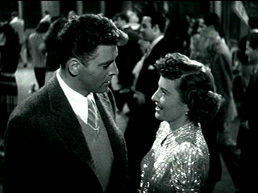

| Sorry, Wrong Number/ B, B |
| Paramount/1948/88/FS 1.33/BW |
Sorry, Wrong Number sets up quickly
with a fateful phone call. Leona Stevenson takes the call from her
convalescent bed. A murder is going to be committed at precisely 11:15 pm
that night. It's not quite clear how she overhears the conversation, but
in 1948 crossed lines were as common as crossed cell phones today. As
Stevenson takes action on the call, the apartment setting makes its own
comments on what the call means. Gradually, a layered flashback on
flashback structure reveals itself effectively. The film does not move in
a predictable path, especially given the opening. The convoluted exercise
in stretching the minute hand of the clock is executed smartly.
 |
|
Best foot forward.
©Paramount
|
Leona Stevenson is a rather unusual part for
Barbara Stanwyck. Stanwyck typically played tough screen ladies, and while
in the early scenes Leona is depicted as a bitch with a spoiled tough
streak, the bedridden Leona is anything but tough. She's a whining hag, a
a once beautiful woman transformed to a harridan. Perhaps Stanwyck is a
bit old for the role. At forty-one, playing a woman in her late twenties
is a stretch. Stanwyck's often histrionic performance can be irritating.
In fact, you sort of like to see her tortured, especially in light of her
manipulative bitchiness in the flashbacks. Burt Lancaster is excellent as
Henry Stevenson. The actor typically took a variety of roles so as not to
typecast himself. He's in bad boy mode in Sorry, Wrong Number.
There's a genuine hunger developed in Stevenson's character.
Veteran director Anatole Litvak builds momentum
toward a twister finish. The great camera work in the apartment at the
opening is a hallmark of the stylist camera of director of photography Sol
Polito. Polito's elegantly roving camera captured many of the beautifully
filmed Michael Curtiz films including The Sea Hawk, Angels with
Dirty Faces, and Charge of the Light Brigade. The film is lit
elegantly with interiors capturing intimacy. The Franz Waxman score
embellishes the tension in broad effective strokes.
The supporting cast is does the job. It's worth
noting that Ed Begley who played Stanwyck's father was only six years
older than her. For a bit of comic relief there's the wonderfully
disgusting Stevenson secretary, ready to gossip at the drop of a hat
pin.
A little bit of horizontal jitter is noticeable
in the titles, but they are sharp and clear and clean. The film remains
mostly sharp with only a couple instances of slightly soft focus.
Film grain is very obvious but at the same time looks natural to the
material. Good black levels and contrast range translate the
lighting very well. Comfortable gray scale. Details are well defined in
black areas. Some of the outdoor sequences are quite washed out; grain is
especially heavy in a number of them. A couple of scratches and some dirt
are evident in the transfer. The Dolby mono sound is somewhat thin. The
music certainly could have more range. Dialogue is easily understood. |
|
|
|

Selections from the Feature
Archive include articles on Akira Kurosawa, Blonde Bimbos, Frank Darabont, Steven Culp, John Herzfeld or Vietnam: The Hollywood Pariah, and many
more....
The Bitch Brigade

A line-up of lean-lipped actresses who marched through
Hollywood in a high heeled goose step armed with razor sharp dialogue.
Click on the image to read all about them.


BargainFlix doesn't sell movies! We just tell you where to get them
for the best price! DVD reviews, giveaways and more.

The official site for information about the great comic
director. A treat for connoisseurs of classic Hollywood madcap.
 A huge selection of French movie
posters with images galore. Don't miss this site if you ate interested in
lovely French posters. A huge selection of French movie
posters with images galore. Don't miss this site if you ate interested in
lovely French posters.

The American Widescreen Museum, is the ultimate
resource for widescreen movie information, Martin Hart's reliable site is
a great tool for movie buffs.

Lady Eve, The (SE) A,C+

Wonderful classic comedy from writer/director Preston Sturges. Henry Fonda
and Barbara Stanwyck star.
|